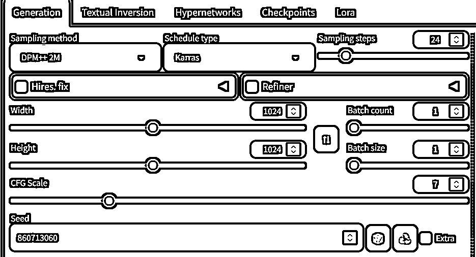
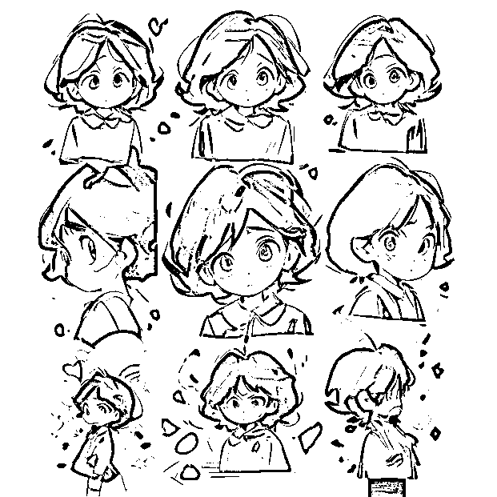
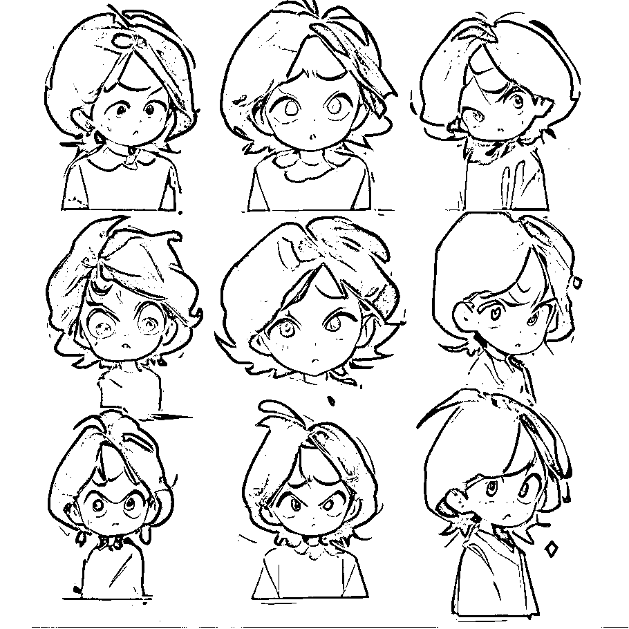

来源：https://kyc6qz7fy7.feishu.cn/docx/KYtddZKb7ojLt8xiFtnc9uC4nVe
大家好，我是哩厘锂力。这个项目其实是Coze航海领队佳文发起的搞钱机器设计挑战，目标是从生财的风向标中找到一个项目，用国庆7天的时间将其转化为Coze的工作流，变成自动化赚钱机器。
我选中的项目是批量表情包，风向标链接是https://wx.zsxq.com/group/1824528822/topic/5121525215188554
做这个项目完全是为了逼自己一把，想跑出内容容易，真的要变现对质量还是有不小要求的。特别是从小红书搜到这个项目的原帖时发现，作者的目的是通过这个项目引流然后做培训。我在这里的目标也是优先跑通项目，抛砖引玉。
虽然这是个Coze的挑战任务，但是我不是在Coze上把这个项目跑起来的，因为Coze的图像生成能力有限，而生成表情包需要特定的模型并使用专门的AI绘画工具（本地运行的Stable diffusion WebUI、ComfyUI或者其他在线工具。这里特别提一下ComfyUI，这个工具也是工作流的形式，功能强大，生财也有相关的文章介绍）。
在这篇文档里，我着重于如何跑通MVP，不会专门讲解怎么做ai绘画，所以阅读需要有基本使用AI绘画工具的经验。
我本职是大厂程序员，工作内容就是负责训练或者优化ai模型，包括图像生成模型和语言模型。加入生财的原因是看到了朋友给推荐的出海工具站项目，我本来就打算做一些能长期积累的项目，增加副业收入，但是没有找到合适的机会，生财正好满足了我的需求。
第一次航海我报名了出海工具站和Coze两个航海。其实我日常工作的内容和Coze要做的事情非常接近，都是通过搭建一些流程，把AI模型嵌入到工作中。但是我仍然报名了Coze航海，因为做一个工作流最重要的不是实现这个过程，而是想法和拆解。一个工作流哪怕再复杂，一旦有人做出来，你照着一点一点搭建，一点一点排错，最后总是能运行的。实在不行，还可以花钱请别人帮你实现。
参加航海最大的收获就是，能看到大家把自己独有的想法用工作流来实现。在生财我一开始是疑惑的，一些AI项目输出内容的质量在公司里是根本不会被认可的，但是在生财大家就是能靠这样的成果变现。工作中我的任务是在有整体流程的情况下不断提升模型的效果，而在生财要做的则是从想法到结果用最简单最直接的方法跑通。我也开始理解，为什么很多技术人员，在脱离公司的环境后就无法赚钱了。
需求其实很简单，通过AI绘画模型，生成表情包样式的图片，然后上架到各种平台，通过赞赏变现。
但是有一些隐含需求，图片之间风格和人物要一致，同时又要有区别，体现不同的表情，这样才是一套表情包。
在拆解前，我先总结了一下AI绘画模型在这个项目里的优缺点。
优点：
缺点：
具体拆解：
parameters stickers,biaoqing,stickers of girl in blue, white background,simple background,emotional,illustration,best quality,highly detailed,masterpiece,an extremely delicate and beautiful,extremely detailed,8k wallpaper,Amazing,finely detail,official art,
lowres,bad anatomy,bad hands,text,error,missing fingers,extra digit,fewer digits,cropped,worst quality,low quality,normal quality,jpeg artifacts,signature,watermark,username


parameters stickers,biaoqing,stickers of girl in blue with Pouting face, white background,simple background,emotional,illustration,best quality,highly detailed,masterpiece,an extremely delicate and beautiful,extremely detailed,8k wallpaper,Amazing,finely detail,official art,

流程不是很复杂，但是可以修改的地方很多
每一个可以调节的参数展开，可能都要花上半天时间。因为时间有限，我这里就没有继续做更多尝试了。
要想提升效果，一方面是多积累，尝试过有效的提示词可以记录下来，也可以经常看别人的作品，学习一下别人是怎么优化效果的。